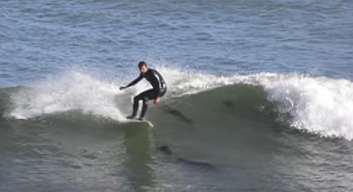

I have a passion for building and fixing things. Let me build something for you.
Before I built web apps, I built furniture, wooden boats and fixed surfboards. I have always been drawn to project based work. Be it building a kayak, a picnic table, repairing beat up surfboards or writing an app so I can recommend my favorite books to my friends. I tried my hand in different fields, working mostly in education and nonprofits, but never really found my niche. After some reflection, I realized that given my love for building things and my interest in problem solving that web development was the right avenue to pursue. I self taught for a little while, but then decided that I would learn more at a boot camp, so I enrolled at General Assembly where I learned more quickly than any of my other educational experiences.
When I’m not working, I love spending time with my kids, surfing, building things, listening to sci-fi and fantasy epics via Audible, who really has time to read books these days, doing jigsaw puzzles and playing video games. If I had all the time in the world I’d train more in Muay Thai, learn to sail, play my cello again, dungeon master an Advanced Dungeons and Dragons group and a Rifts group, start a metal band and find a dedicated Twilight Struggle playing partner. But hey, you only got so much time.
I look forward to a long career of building cool stuff so I can keep doing cool stuff!